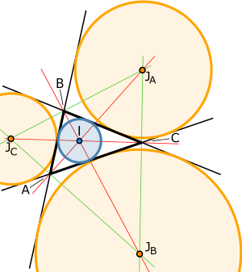

aa3+b3+c3-3abc=(a+b+c)(∑a2-∑ab)if a3+b3+c3-3abc=0⟹ a+b+c=0 or ∑a2-∑ab=0∑a2-∑ab=0=a2+b2+c2-ab-bc-ca=0⟹2(a2+b2+c2-ab-bc-ca)=0⟹a2-2ab+b2+b2-2bc+c2+c2-2ca+a2=0⟹(a-b)2+(b-c)2+(c-a)2=0⟹a=b=c=0a4+a2b2+b4=(a2-ab+b2)(a2+ab+b2)x4+x2+1=(x2-x+1)(x2+x+1)
5-26=3+2
1 is neither prime nor composite. Twin Prime: Prime numbers with difference equal to 2. e.g. (3, 5), (5, 7)Co-prime/Relatively prime. Natural numbers with HCF = 1. e.g. (1,n), (7,8)
logaN>0 if a and N are on the same side of unity.Means log0.20.1>0 &log47>0Similarly for opposite side of unity means logaN<0
na=a1
n, a & N⩾2, n∈N∛3=31
3But 2.53≠31
2.5
Irrational Numbers (𝜋, logab when a and b are coprime)𝜋≠22
7
x=3.1⏨1410x=31.⏨141000x=3114.⏨14Substracting (2) from (1)990x=3083x=3083
990
Exponential Form or Antilog/Power Form(N=ax, a>0 & a≠1)Antilog8(2
3)=82
3
Logarithmic Form (logaN=x, N>0, a>0, a≠1)log8127=x27=81x33=34x3=4xx=3
4
2+3 and 2-3 are inverse of each other. That's why log2∓32±3=1Tip. Always try cross checking your solutions with the questions given. e.g.a7log7x+2x+9=0⟹x+2x+9=0logaybx=x
Mantissa and Characteristics can also be applicable for different bases other than 10. Always remember aMantissa∈[0,1)Characteristics∈Z (any integer)
x2=∣x∣
∣x-1∣+∣x-3∣=5Mark the zeroes on the number line. 13IIIIII
Case I:
aWhen x⩾3 x-1+x+3=5⟹2x-4=5⟹x=9
2Note: Always check if the resulting solution satisfies the case condition.9
2∈[3,∞)
Case II:
a When 1⩽x<3(x-1)-(x-3)=5⟹2≠5⟹No Solution
Case III:
aWhen x<1⟹-x+1-x+3=5⟹-2x+4=5⟹x=-1
2∈(-∞,1)
(a(x))p(x)=(b(x))q(x)⟹a(x)=b(x)=1 or p(x)=q(x)=0(a(x))b(x)=1(a(x))=1 or b(x)=0Note: That x is not the solution which makes 00 undefined form
For a>1, 0<x<y⟹logax<logayFor a<1, 0<x<y⟹logax>logay
Remember tan𝜋
8=2-1 & cot𝜋
8
Tip: if you are able to find out one root by hit and trial,you can easily find out the other root by 𝛼𝛽=absolute term.
Quadratic Equationsy=ax2+bx+cVertex (x,y): x=-b
2a and y=-D
4a(-b
2a,-D
4a)if one root of a quadratic equation is p+q then other root is p-q and vice versa.if one root of a quadratic equation is p+iq then other root is p-iq and vice versa.
If roots of an quadratic equation ax2+bx+c=0 are in the ratio of m:n, Then, (mn)b2-(m+n)ac=0
f(x)=(x-a)(x-c)+2(x-b)(x-d)a<b<c<df(a)=2(a-b)(a-d)(positive)f(b)=(b-a)(b-c)(negative)If you are sure about f(x) being both positive as well as negative. That means f(x) has D>0 and hence, the curve will cut x-axis at two distinct points.Similarly, (x-a)(x-b)-1=01. Leading coefficient>0 (Upward facing parabola)2. f(a)=-1 & f(b)=-1, That a part of the parabola is below x axis and thus definitely cut it at two distinct places.
Remember this quadratic x2-4x+1=0 which has two roots cot15°=2+3 and tan15°=2-3sin15=cos75=3-1
22cos15=sin75=3+1
22
x=cos36°x=5+1
44x=5+116x2-8x+1=54x2-2x-1=0Similarly, x=tan𝜋
8x=2-1
1. Type-11. Solving quadratic equation inequality.2. Factorize in linear as far as possible. 3. Make coefficient of x as 14. Mark zeros of linear on number line.5. Give sign to respective area on number line. 2-x-x2⩾0x2+x-2⩽0x2+2x-x-2⩽0(x+2)(x-1)⩽0x∈[-2,1]-21+-+Type-21. Get rid of even power.Taking care of solution2. Odd power treat as linear. 2. (x+1)(x-3)(x-2)2>0Putting x=2, 0≯0. Therefore, x≠2(x+1)(x-3)>0-13+-+x∈(-∞,-1)∪(3,∞)Type-5Rational Inequality(x-1)(x-2)(x-3)
(x-4)(x-5)<0x≠4, x≠512345+---++x∈(-∞,1)∪(2,3)∪(4,5)To solve such inequalities. Always compare with zero. Following is an example. x2-5x+12
x2-4x+5>3⟹x2-5x+12
x2-4x+5-3>0Never cross multiply to solve inequality until you are sure about denominator being always positive.
10x(x-1)(x-2)⩾010x is always positive.So,(x-1)(x-2)⩾0⟹x∈(-∞,1)∪(2,∞)(2x-8)(x-7)(x+1)⩽0Replace 2x by x only.(x-8)(x-7)(x+1)⩽0
Remember, x2+y2+z2⩾xy+yz+zx
Important Question. y=ax2+bx+cTell about c>0 or c<0Answer: a<0 and product of roots<0𝛼𝛽<0c
a<0because a<0, c must be always positive.Therefore, c>0
A given quadratic equation ax2+bx+c=0 is an identity, when a=b=c=0. Number of roots are infinite. 3 distinct real roots means infinite roots which further means an identity.(p+2)(p-1)x2+(p-1)(2p+1)x+p2-1=0is an identity.(p+2)(p-1)=(p-1)(2p+1)=p2-1p=1
for ax2+bx+c=0,
Number of roots
Condition
zero
When D<0
one
When D=0
two
When D>0
infinite
a=b=c=0
One root zero
ax2+bx=0, c=0
Both root zero
ax2=0, b=c=0
One root infinite
bx+c=0, a=0
Both root infinite
c=0, a=0, b=0
Symmetric Function f(𝛼,𝛽)=f(𝛽,𝛼)e.g. f(𝛼,𝛽)=𝛼2𝛽+𝛼𝛽2, cos(𝛼-𝛽)
Condition for both roots common. Let's say px2+5x+2=0 and 3x2+10x+q=0p
3=5
10=2
qp=3
2 & q=1
Try to spot the cyclic order in an equation. For example, (a-b)(b-c)x2+(b-c)(c-a)x+(c-a)(a-b)a(b-c)x2+b(c-a)x+c(a-b)=0You can easily find trivial root in such cases. It is lot more helpful in other cases as well. The other root, you can find out using product of roots=absolute term
leading coefficient
RangeRange of f(x)=1
linear is always R-{0} because you can never get 0 as output from f(x)Range of y=linear
linear=ax+b
cx+b is y∈R-{a
c}e.g. y=x+2
x+1∈R-{1}Proof:x+1+1
x+1=1+1
x+1Since 1
x+1 can't be zero, so 1+1
x+1 can't be one.⟹1+1
x+1∈R-{1}
Range of Linear
Quadratic,Quadratic
Quadratic,Quadratic
Linear. Find range in such type by making quadratic in y, then D⩾0 and later verifying the leading coefficient.
e.g. y=x2-3x+4
x2+3x+4⟹yx2+3xy+4y=x2-3x+4⟹(y-1)x2+(3y+3)x+4y-4Considering this a quadratic equation,y≠1 (Will later verify)So for all real x, D⩾0(3y+3)2-16(y-1)2⩾09(y2+2y+1)-16(y2-2y+1)⩾0-7y2+50y-7⩾07y2-50y+7⩽07y2-49y-y+7⩽07y(y-7)-1(y-7)⩽0(7y-1)(y-7)⩽0y∈(1
7,7)Now checking if y=1 is our solution or not.x2-3x+4
x2+3x+4=1x2-3x+4=x2+3x+4x=0Therefore x =0, y=1 which should be in our solution.1 is already in (1
7,7)Final Solution: y∈(1
7,7)Always check if the denominator equals to zero for any value of x.
x2-5x+6
x2-4x+3=(x-3)(x-2)
(x-3)(x-1) considering x≠3y=x-2
x-1Since x≠3, then y≠3-2
3-1≠1
2Range∈R-{1,1
2}
f(x,y)=ax2+2hxy+by2+2gx+2fy+cCondition of general 2 degree in x and y to be resolved into two linear factors.abc+2fgh-af2-bg2-ch2=0Trick to remembera b cf g h
x2-3xy+2y2-2x-3y-35=0(x2-2xy-xy+2y2)-2x-3y-35=0(x(x-2y)-y(x-2y))-2x-3y-35=0(x-2y)(x-y)-2x-3y-35=0(x-2y+c1)(x-y+c2)=0Now equate coefficients of x and y, and constants if required. c1+c2=-2-c1-2c2=-3⟹-c2=5c2=5, c1=-7We can use c1c2=-35 also.
Any general 2° equation can be considered as a quadratic equation in either x or yx2+16y2-3x+2=0Quadratic in xx2-3x+(16y2+2)=0if the equation is satisfied by real values of xD⩾09-4(16y2+2)⩾0
ax3+bx2+cx+d=a(x-𝛼)(x-𝛽)(x-𝛾)∑𝛼=-b
a,∑𝛼𝛽=c
a,∏𝛼=-d
aFor generating sum taken two at a time. ∑𝛼𝛽=(∑𝛼)2-∑𝛼2
2
Transformation of roots
Quadratic Equation
Roots
ax2+bx+c=0
𝛼, 𝛽
a(x-1)2+b(x-1)+c=0
𝛼+1, 𝛽+1
a(x+1)2+b(x+1)+c=0
𝛼-1, 𝛽-1
a(x
a)2+b(x
a)+c=0
a𝛼, a𝛽
a(ax)2+b(ax)+c=0
𝛼
a,𝛽
a
Location of RootsType - 1Both roots of a quadratic equation are greater than a specified number (𝛼,𝛽)>dif y=ax2+bx+ca>0, D⩾0,-b
2a>d,f(d)>0• dType - 2Both roots lies on either side of a fixed number.say (d), 𝛼<d<𝛽a>0, f(d)<0d⦁𝛼𝛽Improved version of this type when you are uncertain about the leading coefficient of the parabola.d•d•Common Condition, af(d)<0
Type - 3Both roots lies between two fixed number.d<𝛼<𝛽<eConditions:D⩾0, af(e)>0, af(d)>0, d<-b
2a<e
Type - 4Both roots lies on either side of two fixed numbers.𝛼<d<e<𝛽Conditions: af(d)<0,af(e)<0d⦁𝛼𝛽e⦁Type - 5Exactly one roots lies in the interval (d,e)f(d)f(e)<0d⦁𝛼𝛽e⦁Do not forget to check that d and e can also be root of the given quadratic equation. e.g. Find a for which exactly one root of the quadratic equation x2-(a+1)x+2a=0 lies in (0,3)Solution: f(0)f(3)<0⟹2a(9-3(a+1)+2a)<02a(9-3a-3+2a)<02a(6-a)<0a(a-6)>0a∈(0,6)Check 1: f(0)=0a=0x2-x=0⟹x(x-1)=0x=0,1One root 1, lie between (0,3)a=0 should be included in our answer.a=0Check 2: f(3)=09-(a+1)3+2a=09-3a-3+2a=06-a=0a=6x2-7x+12=0x2-4x-3x+12=0x(x-4)-3(x-4)=0(x-3)(x-4)=0x=3,4None of the roots lie between (0,3)Hence, a=6 should not be included in our final answera≠6Combining (3), (4), and (5)a∈[0,6)NOTE: Always check if the resulting solution satisfies the original equation.
To find range use perfect square and for algebra try to put some trig. func.e.g.x2+y2=1 Find minimum and maximumof 5x-12yx=cos𝜃y=sin𝜃5x+12y=5cos𝜃+12sin𝜃∈[-13,13]
sin𝛼+sin(𝛼+𝛽)+....+sin(𝛼+(n-1)𝛽)=sinn𝛽
2
sin𝛽
2(sin𝛼+𝛼+(n-1)𝛽
2)cos𝛼+cos(𝛼+𝛽)+....cos(𝛼+(n-1)𝛽)=sinn𝛽
2
sin𝛽
2(cos𝛼+𝛼+(n-1)𝛽
2)
sin2(A
2),sin2(B
2) and sin2(C
2) is in HP. ⟹a, b and c are AP.
acosA+cosC=4sin2(B
2)⟹a, b and c are in AP
For a unique triangle, SSS, SAS, ASA, RHS congruency. Rest can be found out easily.
Most of the expressions containing cyclic order associating - (substraction) reduces to zero.
if cotA,cotB and cotC are in APa2, b2 and c2 are in AP.if r1, r2 and r3 are in HP, then a, b and c are in AP.
1
r1+1
r2+1
r3=1
rr1+r2+r3-r=4R
Length of angle bisectorA
2A
2ABCxcbax=2bc
b+ccosA
2x=(harmonic mean b and c)cosA
2Similarly others.
ABCcba||xx=2b2+2c2-a2
2Let l1, l2 and l3 are the length of the medians of the triangle. Then, 4(l21+l22+l23)=3(a2+b2+c2)
Determinants and MatricesD=DTSkew-Symmetric Determinant, DT=-D
Remainder TheoremAny polynomial P(x) when divided by (x-a) leaves a remainder P(a). If P(a)=0, then (x-a) is the factor of P(x)
Remember: a
1
x
x2
1
y
y2
1
z
z2
=(x-y)(y-z)(z-x)a
1
x
x3
1
y
y3
1
z
z3
=(x-y)(y-z)(z-x)(x+y+z)Note that, most of the time complicated determinants will have trivial answers.
System of Equationa1x+b1y+c1=0 & a2x+b2y+c2=0a1
a2≠b1
b2⟹(Intersecting Lines) Unique Solutiona1
a2=b1
b2≠c1
c2⟹(Parallel Lines) No Solutiona1
a2=b1
b2=c1
c2⟹(Overlapping lines or same lines) Infinite Sol.
Sum of all interior angles of a polygon with n number of sides = (n-2)𝜋
Modulus Inequality2∣x+2∣-∣2x+1-1∣=2x+1+1Find points where sign changes. From |x+2|, sign change at -2from |2x+1-1|2x+1-1=02x+1=12x+1=20x+1=0x=-1-2-1IIIIIICase I: x⩾-12x+2-2x+1+1=2x+1+12x+2=2x+2True of all xx∈[-1,∞)Case II: -2⩽x<-12x+2+2x+1-1=2x+1+12x+2=2x+2=1x=-1-1 is not within our assumption.Case III: x<-22-x-2+2x+1-1=2x+1+12-(x+2)=2-x-2=1x=-3From (1) and (2), our final answer is x∈[-1,∞)∪{-3}
Remembery=x+1
x, y∈(-∞,-2]∪[2,∞)
Trigonometrytan𝛼+cot𝛽=sin(𝛼+𝛽)
cos𝛼sin𝛽sin𝜃sin(60+𝜃)sin(60-𝜃)=sin3𝜃
3cos𝜃cos(60+𝜃)cos(60-𝜃)=cos3𝜃
3tan𝜃tan(60+𝜃)tan(60-𝜃)=tan3𝜃cot𝜃-tan𝜃=2cot2𝜃
For a triangle with side a, b and c, |a-c|<bArc Length, 𝜃=l
r1c≈57°
sin𝜃 Dominancecos𝜃 45° HGO2 : 1
⦁rrrHO
cos𝜃=1
30<1
3<1
2cos90°<1
3<cos60°𝜃∈(60°,90°)
sin15=cos75=3-1
22cos15=sin75=3+1
22tan15=2-3cot15=2+3tan𝜋
8=cot3𝜋
8=2-1cot𝜋
8=tan3𝜋
8=2+1
sin18°
→
5-1
4
←
cos72°
↓
↑
cos36°
→
5+1
4
←
sin54°
1-cos2𝜃
sin2𝜃=tan𝜃,1+cos2𝜃
sin2𝜃=cot𝜃e.g.cos𝜃=1
3 Find tan𝜃
2.tan𝜃
2=1-cos𝜃
sin𝜃=1-1
3
22
3=2
22=1
2cos2𝜃=1-tan2𝜃
1+tan2𝜃cot𝜃-tan𝜃=2cot2𝜃
Continued cosine product with angles in GP with r=2cos𝜃cos2𝜃cos4𝜃......cos2n-1𝜃=sin2n𝜃
2nsin𝜃where 𝜃 is the smallest angle and n is the number of times cosine is repeated.
To solve continued productn∏r=1cos(r𝜃)=cos𝜃cos2𝜃.......cosn𝜃1. Only for cosine2. If sine product is given, convert into cosine product.3. Multiply and divide by sine of smallest angle.4. sin𝜃cos𝜃=sin2𝜃
2e.g.cos𝜋
7cos2𝜋
7cos3𝜋
7=2sin𝜋
7cos𝜋
7cos2𝜋
7cos3𝜋
7
2sin𝜋
7=sin2𝜋
7cos2𝜋
7cos3𝜋
7
2sin𝜋
7=sin4𝜋
7cos3𝜋
7
22sin𝜋
7=sin3𝜋
7cos3𝜋
7
22sin𝜋
7=sin6𝜋
7
23sin𝜋
7=sin𝜋
7
23sin𝜋
7=1
8
Type - 3Sum into productsinx+sin5x=sin2x+sin4x2sin3xcos2x=2sin3xcosx-sin3x(2sin3x
2sinx
2)=02sin3xsin3x
2sinx
2=0
Type - 4Changing Variablesin42x+cos42x=sin2xcos2x1-2sin22xcos22x=sin2xcos2xlet 𝛼=sin2xcos2x1-2𝛼2=𝛼(2𝛼-1)(𝛼+1)=0
Type - 6 Boundedness of cosine/sinecosx+cosx
2+cosx
3=3[-1,1]+[-1,1]+[-1,1]=3must be 1+1+1=3cosx=1 & cosx
2=1 & cosx
3=1
Type - 7Trigonometric Inequalities3sinx⩾1+cos2x3S⩾1+1-2S22S(S+2)-1(S+2)⩾0(2S-1)(S+2)⩾0S+2=[-1,1]+2=[1,3](+ve)Inequality reduces to2S-1⩾0sinx⩾1
2
Solutions of Triangles. Heron's Formula, Δ=s(s-a)(s-b)(s-c)sinA
2=(s-b)(s-c)
bc, Similarly others.cosA
2=s(s-a)
bc, Similarly others.tanA
2=(s-b)(s-c)
s(s-a)=Δ
s(s-a)=(s-b)(s-c)
Δ
Δ=abc
4R, r=Δ
s

r=4RsinA
2sinB
2sinC
2r1=stanA
2, r2=stanB
2, r3=stanC
2r1=Δ
s-a, r2=Δ
s-b, r3=Δ
s-c
Orthocenter: Intersection of altitudes drawn from attitudes to vertices. Pedal Triangle: Triangle drawn as the foot of orthocenter as the vertices of the triangle.
P and A of a regular polygon inscribed in a circle of a radius r of n sides, rr𝜋
n𝜋
n2𝜋
nasin𝜋
n=a/2
r⟹a=2rsin𝜋
nPerimeter=n×2rsin𝜋
nArea=1
2r2sin2𝜋
n
P and A of a regular polygon circumscribing about a circle with radius equal to R. ABRtan𝜋
n=a/2
R⟹a=2Rtan𝜋
nPerimeter=n×2Rtan𝜋
nArea=n×1
2aR=n×1
22Rtan𝜋
n×R⟹A=nR2tan𝜋
n
Area of a parallelogramA=base×height=1
2d1d2sin𝜙d1 and d2 are the diagonals of the parallelogram and𝜙 is the angle between the two diagonals.Also, A=p1×p2
sin𝜃where 𝜃 is any one of the interior angles of the parallelogram.
Intersection of medians ⟹Centroid (G)Intersection of altitudes drawn from vertices ⟹ Orthocenter (H)Intersection of angle bisectors ⟹Incentre (I)Intersection of perpendicular bisectors ⟹Circumcenter (O)
-Centroid (G) and Incentre (I) always lies in interior of triangle whereas H (Orthocenter) and O (Circumcenter) lies inside, outside or periphery depending upon triangle being acute, obtuse or right angle respectively.H---G---O2 : 1-Centroid of the triangle formed by joining the midpoints of the original triangle is same as that of its original triangle.-Circumcenter lies on the hypotenuse in case of a right angled triangle.